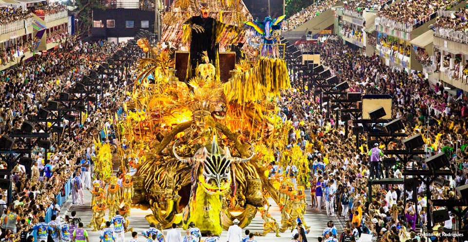
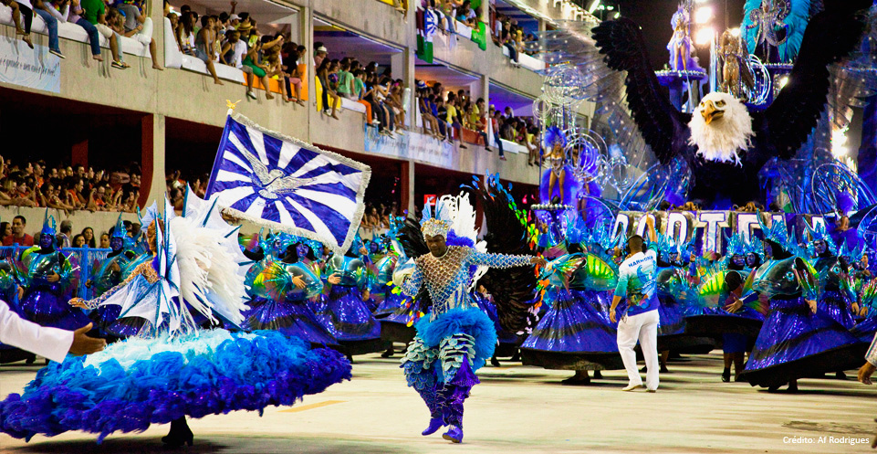

O Carnaval do Rio de Janeiro é uma festa mundialmente famosa, celebrada por diversas manifestações, como desfiles de escola de samba, bailes, blocos e bandas. A festa nas ruas, que estava decadente, renasceu com muita força fora do circuito da Passarela do Samba. Atualmente, o Centro é a região que acumula o maior número de blocos carnavalescos, com cerca de cem agremiações e 2,7 milhões de participantes. São desfiles de ritmos variados — samba, marchinhas, nordestinos — e temáticos, como o Bloco do Sargento Pimenta que toca até músicas dos Beatles em ritmo de samba.
O Carnaval tem seu momento de maior representação na Avenida Marquês de Sapucaí, oficialmente chamada Passarela Darcy Ribeiro e apelidada de Sambódromo, onde, a partir da inauguração, em 1984, acontece o Desfile das Escolas de Samba.

Da alegria das congadas dos negros aos charmosos bailes copiados da capital francesa, o carioca criou suas sociedades carnavalescas, seus blocos, ranchos e bandas, usando da irreverência, dos nomes de duplo sentido e fantasias ousadas. Desde a primeira escola de samba, o incentivo ao ritmo e suas composições explodiram, fazendo surgir a Estação Primeira de Mangueira, a Vai como Pode e a atual Portela. A estrutura modesta e o samba no pé deram lugar ao gigantesco espetáculo de alegria, tecnologia e ares empresariais que, sem dúvida, é a maior festa popular carioca.
